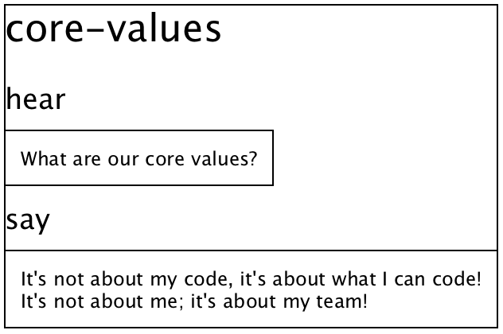

1 Coaching Katas
1.1 What are katas?
That’s the key question.
At the most basic level, a kata is three things:
A stimulus. A description of something a student is intended to take in – usually auditory or visual stimulus.
A response. A description of something a student is intended to do afterward.
(Optional) Refinements. Ways of describing how the student is intended to do the above.
Here’s an example:

But usually, katas will be displayed in a way that’s more integrated with the document you’re reading. Here’s the same kata printed how you might usually see it on one of our webpages:
1.2 Core Values
1.3 Using katas
We’ll be seeing lots of katas like the above in a moment. But before we get to that, we need to say a few words on how katas are supposed to be used by coaches and students.
A coach’s job is to help students master katas, one by one, with the following Four Phases of Kata Mastery:
Encounter. The coach will introduce the student to the kata. At minimum, the student should be "shown" the stimulus. However, it is also fine to "show" the entire kata.
Training. The coach will help the student train for the testing phase. This may involve having the student do other, simpler katas.
Testing. The coach will show the stimulus only. The student must produce the correct response. The student should not receive assistance during the test.
Praise. The coach will praise the student. Where possible, praise should be "growth focused". One of the best ways to do this is to point out the student’s success in the testing phase to their work in the training phase.
Of course, when teaching a classroom full of students, it can be difficult to guide every student through the four phases flawlessly. But good news: 1) Flawlessness is not required, and 2) practice will help you become more and more skillful.
Here are some "meta katas" to test your understanding of what a kata is and how you’re supposed to use them.
1.3.1 Stimulus Kata
1.3.2 Stimulus Kata

1.3.3 Phases Kata
1.3.4 Encounter Phase Kata
1.3.5 Testing Phase Kata
1.4 Easy Coach Katas
What follows are some coach katas. These are katas that are intended to give you practice at coaching. These are "easy" – in the sense that they are suitable for training novice coaches or as warmup katas for more advanced coaches.